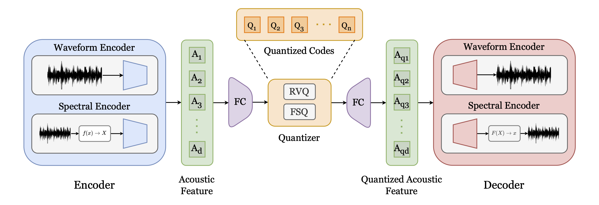

How far are we from a Full-band Single-layer Tokenizer for General Audio?
Abstract
Language modeling (LM) sparked success in Natural language Processing. Neural audio tokenizers are deep neural networks that compress audio signals into discrete "tokens", a compact latent representation that enables LM for audio, unifying the modeling approaches across different modalities. Consequently, audio tokenization has gained increased attention in industry and research communities, particularly low-bitrate tokenizers that operate in a sufficiently low bitrate such that they are compatible with modern approaches in LM. We evaluate current state of the art approaches in single-layer audio tokenizers in their ability to encode full-band speech and general audio. We adapt these models to encode 48kHz audio, and train them on speech and general audio. We provide a comprehensive evaluation across a diverse set of signal, perceptual, and generative metrics, evaluating them compared to similar multi-codebook codecs.
Tokenizer Architecture
| Fig. 1: A generalized visualization of audio tokenizer architecture. The transform f(x) → X is either signal-processing-based or data-driven, mapping audio waveforms x into a time-frequency (spectral) representation X. |
|---|
|  |
Speech samples (VCTK-48kHz)
Baselines
| Ground Truth - 44k | |||||
|---|---|---|---|---|---|
| Ground Truth - 16k | |||||
| Descript Audio Codec - 44k | |||||
| EnCodec - 48k | |||||
| SpectroStream - 48k |
Single-Layer Tokenizers
| Descript Audio Codec - 48k (single codebook) | |||||
|---|---|---|---|---|---|
| EnCodec - 48k (single codebook) | |||||
| SpectroStream - 48k (single codebook) | |||||
| WavTokenizer - 48k | |||||
| BigCodec - 48k | |||||
| StableCodec - 48k | |||||
| XCodec2 - 48k | |||||
| TS3Codec - 48k | |||||
| Wav-Wav (Ours) | |||||
| Spec-Spec (Ours) |
General audio samples (AudioCaps-48kHz)
Baselines
| Ground Truth - 48k | |||||
|---|---|---|---|---|---|
| Ground Truth - 16k | |||||
| Descript Audio Codec - 44k | |||||
| EnCodec - 48k | |||||
| SpectroStream - 48k | |||||
| SoundCTM-VAE |
Single-Layer Tokenizers
| Descript Audio Codec - 48k (single codebook) | |||||
|---|---|---|---|---|---|
| EnCodec - 48k (single codebook) | |||||
| SpectroStream - 48k (single codebook) | |||||
| BigCodec - 48k | |||||
| StableCodec - 48k | |||||
| XCodec2 - 48k | |||||
| Wav-Wav (Ours) | |||||
| Spec-Spec (Ours) |
BibTeX
TBAReference Implementations
- Descript Audio Codec: https://github.com/descriptinc/descript-audio-codec
- EnCodec: https://github.com/facebookresearch/encodec
- SpectroStream: https://github.com/magenta/magenta-realtime
- WavTokenizer: https://github.com/jishengpeng/WavTokenizer
- BigCodec: https://github.com/Aria-K-Alethia/BigCodec
- StableCodec: https://github.com/Stability-AI/stable-audio-tools
- XCodec2: https://github.com/zhenye234/X-Codec-2.0
- TS3Codec: No official implementation available see MagiCodec implementation
- SoundCTM-VAE: https://github.com/koichi-saito-sony/soundctm_dit_iclr